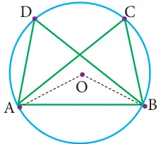
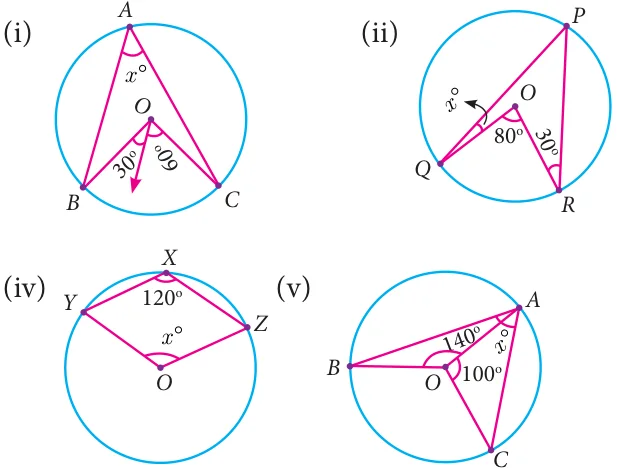
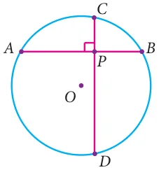

4.5.5 Angles in the same segment of a circle

Consider the circle with centre O and chord AB. C and D are the points on the circumference of the circle in the same segment. Join the radius OA and OB.
\(\frac{1}{2} \angle AOB = \angle ACB\) (by theorem 10) Fig. 4.74
and \(\frac{1}{2} \angle AOB = \angle ADB\) (by theorem 10)

\(\angle ACB = \angle ADB\)
This conclusion leads to the new result.
Theorem 11 Angles in the same segment of a circle are equal.

In the given figure, O is the center of the circle. If the measure of
\(\angle =48 ^{\circ}\) , what is the measure of ÐP ?

Solution
Given \(\angle OQR=48 ^{\circ}\) .
Therefore, ÐORQ also is \(48 ^{\circ}\) . (Why?__________)
ÐQOR \(=180 ^{\circ} - (2 \times 48 ^{\circ} )=84 ^{\circ}\) .
Fig. 4.75
The central angle made by chord QR is twice the inscribed angle at P.
Thus, measure of ÐQPR \(= \frac{1}{2} \times ^{\circ} = ^{\circ}\) .

- The diameter of the circle is 52cm and the length of one of its chord is 20cm. Find the distance of the chord from the centre.
- The chord of length 30 cm is drawn at the distance of 8cm from the centre of the circle. Find the radius of the circle
- Find the length of the chord AC where AB and CD are the two diameters perpendicular to each other of a circle with radius 4 2 cm and also find ÐOAC and ÐOCA.
- A chord is 12cm away from the centre of the circle of radius 15cm. Find the length of the chord.
- In a circle, AB and CD are two parallel chords with centre O and radius 10 cm such that \(AB = 16\) cm and \(CD = 12\) cm determine the distance between the two chords?
- Two circles of radii 5 cm and 3 cm intersect at two points and the distance between their centres is 4 cm. Find the length of the common chord.
- Find the value of \(x ^{\circ}\) in the following figures:



- In the given figure, \(\angle = ^{\circ}\) ,
find ÐBDC , ÐDBAand ÐCOB